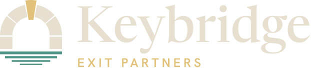
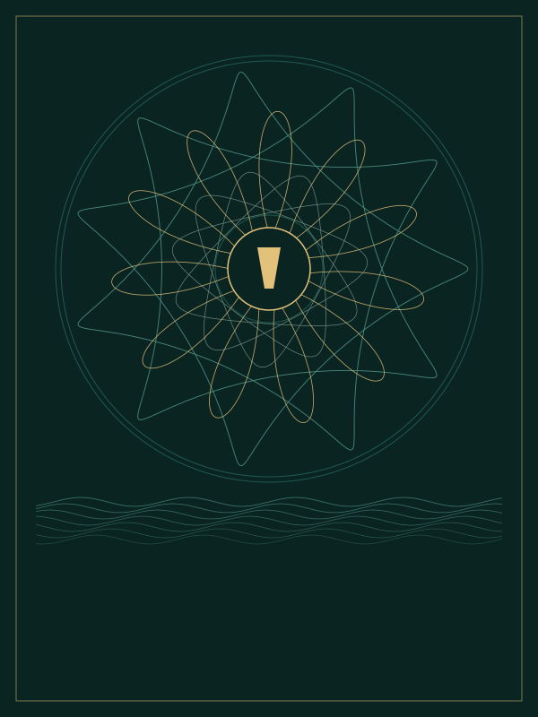

Kézikönyv · 14 perc · PDF-ben isAz önjáró cég kézikönyve: a garázstól a tulajdonosi szerepig
Miért növi ki minden cég az alapítóját, mit mond erről negyven év kutatása, és hogyan építhető fel lépésenként az a működés, amelyben a cég a tulajdonos napi jelenléte nélkül is hozza a tervet.

Keybridge Exit Partners · KézikönyvAz önjáró cég kézikönyve2026növekedési szakasz, mindegyikben más a tulajdonos dolga (Churchill és Lewis, 1983)
közepes gyártó cég adatai szerint a vezetési gyakorlat együtt jár a termelékenységgel
termelékenységjavulás egy év alatt egy vezetési tanácsadást mérő terepkísérletben
a szabadságteszt: ennyi időre tűnik el a tulajdonos az első év végén
- A cégek jól leírható szakaszokon mennek át, és minden szakaszváltás egy válság: ami eddig működött, az a következő méretben már akadály.
- Az alapító saját munkájának jelentősége a növekedéssel csökken, a delegálás képességéé nő. Aki ezt a váltást nem lépi meg, annak az ideje lesz a cég plafonja.
- A vezetési gyakorlat nem puha tényező: kísérletileg bizonyított, hogy a fejlesztése mérhetően növeli a termelékenységet.
- Az önjáró cég hat építőelemből áll, és a döntési mátrix az alapító leválasztásának legerősebb eszköze.
1. Miért növi ki minden cég az alapítóját?
Neil Churchill és Virginia Lewis 1983-ban a Harvard Business Review-ban írta le a kisvállalatok növekedésének öt szakaszát. A modell azért maradt érvényes, mert nem a méretet nézi, hanem azt, hogy az egyes szakaszokban mi a tulajdonos dolga.
| Szakasz | A fő kérdés | A tulajdonos szerepe |
|---|---|---|
| 1. Létezés | Lesz-e elég vevő, és ki tudjuk-e szolgálni őket? | A tulajdonos maga a vállalkozás: minden fontos feladatot ő végez. |
| 2. Túlélés | Több pénz jön-e be, mint amennyi kimegy? | Néhány munkatárs van, de a döntéseket a tulajdonos hozza. |
| 3. Siker | A cég stabil és nyereséges. Mire használjuk? | Elágazás: a tulajdonos vagy a növekedésre tesz fel mindent, vagy elkezd leválni. Mindkettőhöz szakmai vezetők kellenek. |
| 4. Felszállás | Hogyan nőjünk gyorsan, és miből finanszírozzuk? | A kulcs a delegálás: át tudja-e adni a felelősséget másoknak? |
| 5. Érettség | Hogyan őrizzük meg a rugalmasságot nagy méretben? | A tulajdonos és a vállalkozás pénzügyileg és működésében is elvált egymástól. |
Sok sikeres középvállalat a harmadik szakaszban tart. Ez az a pont, ahol a cég a legkönnyebben az alapítóján ragad: elég jól megy ahhoz, hogy ne legyen sürgős változtatni, és elég nagy ahhoz, hogy egy ember már ne lásson át mindent.
2. Minden növekedési szakasz válsággal végződik
Larry Greiner 1972-ben, majd 1998-ban frissítve írta le, hogy a cégek nyugodt fejlődési szakaszait rendre válságok zárják le. A válság oka mindig az előző szakasz megoldása: ami addig a növekedés motorja volt, az a következő méretben fékké válik.
| Válság | Hogyan ismerhető fel | Mi oldja fel |
|---|---|---|
| A vezetés válsága | Az alapító mindenhol ott van, mégis egyre több dolog csúszik. Az informális működés nem bírja el a létszámot. | Szakmai irányítás: szerepek, költségvetés, szabályok. |
| Az autonómia válsága | A jó vezetők elmennek, mert nem dönthetnek. Minden a központban akad el. | Delegálás: döntési jogkörök, önálló felelősség. |
| A kontroll válsága | A területek önállóak, de a tulajdonos nem látja a céget, és a részek másfelé húznak. | Koordináció: terv, riport, kontrolling, testületek. |
| A bürokrácia válsága | A rendszer fontosabb lett, mint a vevő. Minden lassú. | Együttműködés: csapatok, egyszerűsítés. |
3. Bizonyíték: a vezetési gyakorlat mérhető érték
Nicholas Bloom és John Van Reenen 732 amerikai, francia, német és brit közepes méretű feldolgozóipari vállalat vezetési gyakorlatát mérte fel. Az eredmény: a jobb vezetési gyakorlat erősen együtt jár a magasabb termelékenységgel, jövedelmezőséggel, piaci értékkel, árbevétel-növekedéssel és túlélési eséllyel.
A kutatás egy kellemetlen megállapítást is tett. Minden országban van egy hosszú sor nagyon rosszul vezetett cég, és ez ott gyakoribb, ahol gyenge a verseny, és ahol a családi cég a vezetést automatikusan a legidősebb fiúnak adja át.
4. Az önjáró cég hat építőeleme
Egy cég akkor önjáró, ha a döntések egy rendszerből születnek, nem egy ember fejéből. Gino Wickman rendszere hat összetevőt nevez meg. Nem a márka számít, hanem a logika.
| Összetevő | Mit jelent a gyakorlatban |
|---|---|
| Vízió | Hová tart a cég tíz, három és egy év múlva. Mindenki ugyanazt mondja. |
| Emberek | Jó ember jó helyen: illik az értékekhez, és érti, akarja, bírja a szerepet. |
| Adatok | Heti mutatótábla öt és tizenöt közötti számmal. |
| Problémák | Nyílt problémalista, rendszeres megoldás. |
| Folyamatok | Dokumentált fő folyamatok, amelyeket be is tartanak. |
| Végrehajtás | Negyedéves prioritások és heti vezetői megbeszélés. |
A vezetési ritmus
| Megbeszélés | Gyakoriság | Hossz | Tartalom |
|---|---|---|---|
| Operatív | Hetente | 60–90 perc | Mutatótábla, prioritások, problémák |
| Vezetői | Havonta | Fél nap | Havi riport, eltérések, döntések |
| Tervező | Negyedévente | 1 nap | Új prioritások |
| Stratégiai | Évente | 2 nap | Éves terv, költségvetés |
Amíg nincs rendszeres fórum, minden döntés az alapítóhoz fut vissza.
5. Folyamatok: a tudás ne egy fejben legyen
Egy 1 és 10 milliárd forint közötti árbevételű cégnél jellemzően hat és nyolc közötti fő folyamat van: értékesítés, beszerzés, termelés vagy szolgáltatásnyújtás, logisztika, pénzügy, HR, IT. Mindegyiknek legyen gazdája.
A jó folyamatleírás rövid: cél és mérőszám, bemenet és kimenet, a lépések közül az a nagyjából egyötöd, amely az eredmény négyötödét adja, a felelősök, valamint a kivételek kezelése. A felelősséget a RACI mátrix tisztázza: ki hajtja végre, ki felel érte (lépésenként csak egy ember), kitől kell véleményt kérni előtte, és kit elég tájékoztatni utána.
6. Második vezetői vonal és döntési mátrix
A kulcsszerepek egy középvállalatnál: ügyvezető vagy operatív igazgató, pénzügyi vezető, értékesítési vezető, termelési vagy szolgáltatási vezető, és HR. A betöltésnek három útja van.
| Út | Előnye | Kockázata |
|---|---|---|
| Belső előléptetés | Olcsó, lojális, ismeri a céget | Gyakran túl gyors ugrás |
| Külső felvétel | Tapasztalatot hoz | Beilleszkedés |
| Interim vezető | Gyors | Átmeneti és drága |
Példa döntési mátrixra
| Döntés | Osztályvezető | Ügyvezető | Tulajdonosi tanács |
|---|---|---|---|
| Beszerzés | 5 M Ft alatt | 5 és 30 M Ft között | 30 M Ft felett |
| Beruházás | nincs | 20 M Ft alatt | 20 M Ft felett |
| Árengedmény | 5% alatt | 5 és 15% között | 15% felett |
| Felvétel | Beosztott | Középvezető | Felsővezető |
| Hitel, kezesség | nincs | nincs | Minden |
Az értékhatárok példák, minden cégnél külön kell meghúzni őket. A delegálásnak négy szintje van, és nem kell rögtön a negyedikre ugrani: tájékoztat, és én döntök; javasol, és én döntök; dönt, és utána jelent; önállóan dönt.
7. Kontrolling: mindenki ugyanazt a számot lássa
A legtöbb magyar középvállalatnál a könyvelés adózási célú. A vezetői kontrolling célja, hogy a hónap tizedik munkanapjáig mindenki ugyanazokat a számokat lássa. A havi vezetői riport tartalma:
- eredmény a tervhez és az előző évhez képest, EBITDA,
- pénzállomány és 13 hetes pénzforgalmi előrejelzés,
- forgótőke mutatók,
- a tíz legnagyobb vevő árbevétele és fedezete,
- értékesítési lehetőségek, létszám és bérköltség.
Számpélda: a forgótőke a leggyorsabb pénzforrás
| Árbevétel | 3 000 M Ft |
| Vevőállomány 600 M Ft: a vevők napjai | 73 nap |
| Készlet 450 M Ft: a készlet napjai | kb. 91 nap |
| Szállítóállomány 300 M Ft: a szállítók napjai | kb. 61 nap |
| Pénzkonverziós ciklus | kb. 103 nap |
| Ha a ciklus 20 nappal rövidül, felszabadul | kb. 164 M Ft |
A felszabaduló pénz a tulajdonosé vagy a növekedésé, és a vevő is figyeli: a forgótőke eltérése a normál szinttől a vételárat is módosítja.
8. Ösztönzés és megtartás: a vevő a csapatot is megveszi
| Eszköz | Mire jó | Megjegyzés |
|---|---|---|
| Éves bónusz | Rövid távú célok | Három vagy öt mérhető cél |
| Fantom részesedés | Hosszú távú értéknövelés tulajdon nélkül | Pénzbeli jutalom a cégérték növekménye után; egyszerű, bérként adózik |
| Valódi részesedés vagy opció | Erős elköteleződés | Kft.-ben nehézkes, Zrt.-ben egyszerűbb; szindikátusi szerződés kell hozzá |
| Munkavállalói Résztulajdonosi Program | Munkavállalói tulajdon | Kialakítása adótanácsadóval |
| Megtartási bónusz | Kulcsemberek az exit körül | A zárás után 6 vagy 12 hónappal fizet |
Egy 102 mintát és 56 984 céget feldolgozó metaanalízis szerint a munkavállalói tulajdon kicsi, de statisztikailag szignifikáns pozitív kapcsolatban áll a cég teljesítményével. Nem csodaszer, de utódlási eszközként is működhet.
A kulcsembereknél versenytilalmi és titoktartási megállapodás is kell. A munkaviszony megszűnése utáni versenytilalom legfeljebb két évre köthető, és ellenértéke nem lehet kevesebb, mint az ugyanerre az időre járó alapbér egyharmada.
9. Az első 90 nap: ellenőrzőlista
- 1–2. hét: a tulajdonos leírja, miről dönt ma egyedül. Ez a lista a döntési mátrix nyersanyaga.
- 3–4. hét: elindul a heti vezetői megbeszélés, öt és tizenöt közötti mutatóval.
- 2. hónap: kijelölik a fő folyamatok gazdáit, és elkészül az első két folyamatleírás.
- 2. hónap: a havi zárás határideje a tizedik munkanap. Az első vezetői riport elkészül.
- 3. hónap: a döntési mátrix első változata életbe lép, a legkisebb kockázatú döntésekkel.
- 3. hónap: a három legnagyobb vevő kapcsolatának átadása elkezdődik, közös látogatásokkal.
- A 90. napon: újramérés, és a következő ciklus három vagy öt prioritása.
- Churchill, N. C., Lewis, V. L. (1983): The five stages of small business growth. Harvard Business Review, 61(3).
- Greiner, L. E. (1972, 1998): Evolution and revolution as organizations grow. Harvard Business Review.
- Bloom, N., Van Reenen, J. (2007): Measuring and explaining management practices across firms and countries. Quarterly Journal of Economics, 122(4).
- Bloom, N., Eifert, B., Mahajan, A., McKenzie, D., Roberts, J. (2013): Does management matter? Evidence from India. Quarterly Journal of Economics, 128(1).
- Wasserman, N. (2008): The founder's dilemma. Harvard Business Review, 86(2).
- Wickman, G. (2011): Traction: Get a Grip on Your Business. BenBella Books.
- O'Boyle, E. H., Patel, P. C., Gonzalez-Mulé, E. (2016): Employee ownership and firm performance: A meta-analysis. Human Resource Management Journal.
- 2012. évi I. törvény a munka törvénykönyvéről, 228. §.
Ez az útmutató általános tájékoztatás, nem jogi, adó vagy befektetési tanácsadás. Konkrét ügyben ügyvéddel és bejegyzett adótanácsadóval kell egyeztetni. A számpéldák illusztrációk, nem ígéretek. A jogi és adózási leírások a 2026 őszi állapotot tükrözik. © 2026 Keybridge Exit Partners